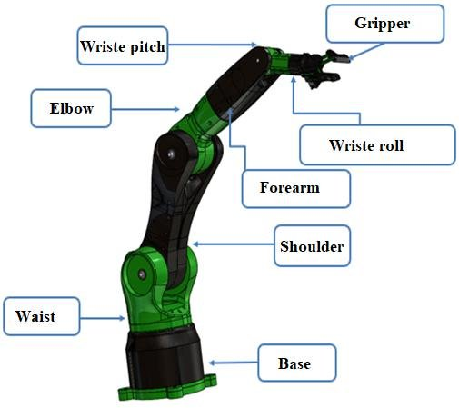

Background
I've always found robotics/mechatronics interesting. Working on robots incorporates mechanical, electrical, and software engineering knowledge and demands skills from all three domains. I wanted to work on a project that allowed me to apply my hardware and control-systems skills while also gaining experience using CAD and simulation software. A robot arm checked all the boxes.
Approach
There was a lot I needed to learn before I could even start working on the arm, the first of which being Fusion 360. I jumped straight into small design projects to familiarize myself with Autodesk and understand the tools available within the environment. I didn't want to get stuck in tutorial limbo, so after a few designs I decided I was ready to start on the arm (I was not at all ready).
After a bit of struggling I finally completed the base of the arm, importing models for the Arduino, MG995 servo motor, and servo motor horn to ensure proper fit and movement of the top assembly. Working through the design with limited CAD experience is an iterative process that truly highlights the importance of design-for-assembly and fully-constrained CAD practices.
Status
This project is very much still in its early stages. I'm keeping this page intentionally updated as the project evolves to document the entire engineering process from concept -> design -> build.
The current challenge is designing the waist joint that connects the first arm link to the base of the arm. The joint has to not only allow for pitch movement, but it needs to house the second MG995 servo while simultaneously being light enough for MG995 #1 movement and strong enough to support the weight of the rest of the arm.

Tools & Techniques
- Microcontroller: Arduino
- Domain: Mechanical assembly, motor control, embedded systems